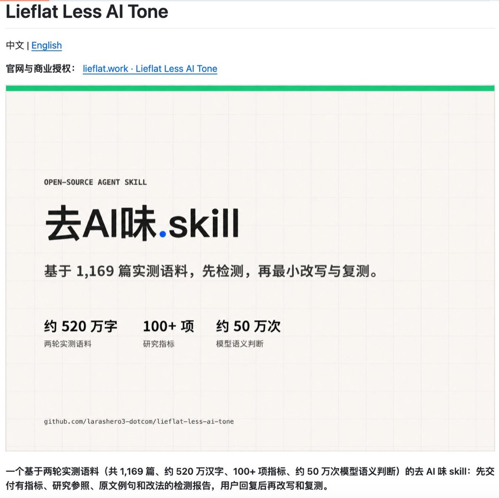
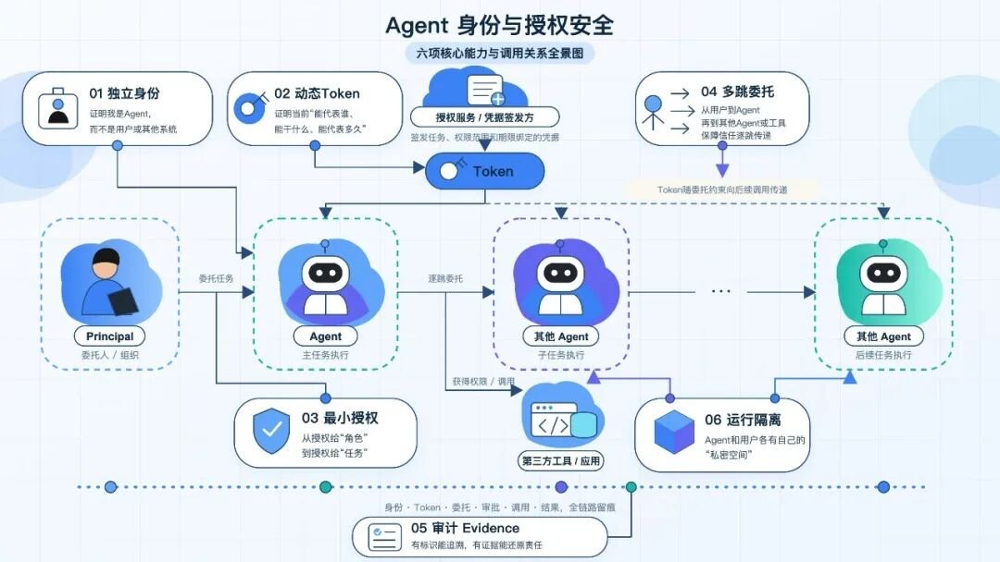

本期速览
01 Grok Build 全平台开放实时构建应用
02 AI 编码提速但评审时间增 91%
05 阿里 Deferred Token Response 智能体安全规范
01｜Grok Build 全平台开放实时构建应用
来源（X） · @grok · 2026-09-25 20:04
中文译文
告诉 Grok 一个想法，它就会在你的聊天中实时构建出一个可运行的版本。
Grok Build 现已在所有套餐中提供——覆盖 web、iOS 和 Android。
原文
Tell Grok an idea, and it builds a working version live in your chat.
Grok Build is now available on every plan - on web, iOS, and Android.
02｜AI 编码提速但评审时间增 91%
来源（X） · @BainandCompany · 2026-11-10 05:40
中文译文
AI 让编码变快了。开发者完成的任务多了约 21%，但审查时间增加了约 91%。瓶颈正在转向审查、治理和软件交付。了解那些领先的组织如何围绕 AI 重新设计其系统，以持续改进 SDLC。
原文
AI made coding faster. Developers complete ~21% more tasks, but review time is up ~91%. The bottleneck is shifting to review, governance, and software delivery. Discover how the organizations pulling ahead are redesigning their systems around AI to continuously improve the SDLC.
03｜本地 LLM 可行性工具算力与量化推荐
来源（X） · @YTStudioTV · 2026-11-27 07:45
中文译文
“我能在自己的 PC 上运行这个 LLM 吗？”这个问题每天被问上千次。
我构建了回答这个问题的工具。选择你的 GPU 或 Mac 以及一个模型：能或不能、速度是多少 tokens/s、最适合下载的量化版本、运行它的命令。
免费，无需注册。
原文
"Can I run this LLM on my PC?" gets asked a thousand times a day.
I built the tool that answers it. Pick your GPU or Mac and a model: yes or no, how fast in tokens/s, the best quant to download, the command to run it.
Free, no sign-up.
04｜Lieflat Less AI Tone 检测机器写作套路
来源（X） · @shenxiankk · 2026-11-27 07:53
这个项目名为Lieflat Less AI Tone，作者拆解了1169篇文本、设置100多项衡量维度，专门识别那些一眼就能识破的机器写作套路。
譬如通篇「不是A，而是B」的句式、段落排列过分齐整、空泛套话扎堆、衔接转折生硬，它都能替你揪出来。
最贴心的是，它不会上来就乱改！先输出一份检测报告，指出问题所在，等你确认之后才动手修改，并尽可能保留原文的表达风格。
经常借助ChatGPT、Claude撰写公众号文章、推文或自媒体文案的人，建议收藏起来！
GitHub：https://github.com/larashero3-dotcom/lieflat-less-ai-tone

05｜阿里 Deferred Token Response 智能体安全规范
来源（X） · @hongming731 · 2026-11-26 21:12
主要包含以下 6 项核心能力：
1. 智能体需要独立身份才能解决责任追溯问题
智能体虽然不是法律主体，但作为独立行动单元，必须拥有区别于用户和传统应用的唯一标识。只有独立身份才能明确责任主体，使运营者、委托者和智能体之间的责任关系能够厘清，事后追责才有依据。
2. 动态令牌确保授权在特定任务和时间范围内有效
每次执行任务时，智能体应获得匹配当前任务的动态令牌。令牌绑定代表谁、执行者、权限范围、任务目的和有效期，防止长期凭证被滥用。高风险操作还需绑定关键参数，确保授权内容在执行前不被篡改。
3. 最小授权原则要求按任务授予最小权限
传统基于角色的授权不适用于智能体的自主规划。应从「角色通常能做什么」转向「完成此次任务最少需要做什么」。权限边界落实到资源、动作、条件和时间四个维度，防止 Agent 越权或滥用权限。
4. 链式委托需可追溯且防止权限放大
多跳委托要求每一跳验证授权来源，权限不能超过上一级拥有的范围，也不能超过当前子任务所需。时间、金额、用途等约束必须随委托传递。若需要新增权限，必须返回原始委托方授权。
5. 审计存证需要形成可验证的证据链
智能体行为审计应从记录日志升级为形成证据链。完整证据链包含发起、授权、委托、确认、执行和结果六类证据，通过数字签名、摘要和统一关联标识实现可验证、可追溯。
6. 运行隔离为智能体提供受控的私密空间
智能体运行环境必须与用户凭证、系统权限等隔离。隔离应覆盖模型、数据、凭证、工具和进程五个方面。通过沙箱等方式限制 Agent 访问宿主进程和无关数据，防止行为漂移导致链路风险。
